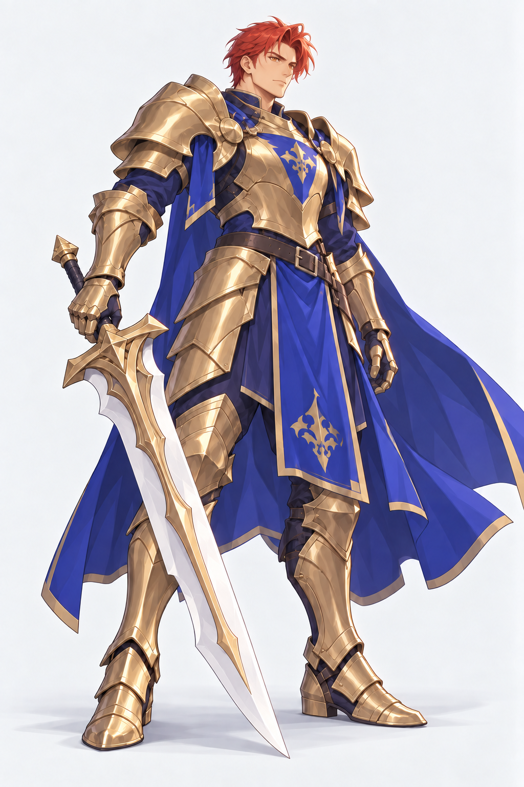
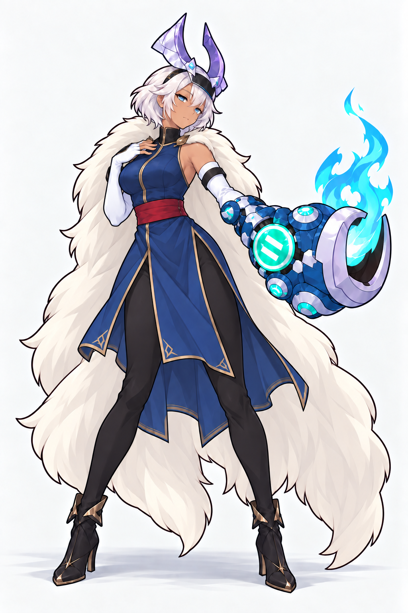

<!doctype html><html lang="zh-CN"><meta charset="utf-8"><meta name="viewport" content="width=device-width,initial-scale=1"><title>三张立绘 · 描边加强</title><style>body{margin:0;background:#e8e5df;color:#282622;font:15px/1.5 -apple-system,BlinkMacSystemFont,sans-serif}header{position:sticky;top:0;background:#e8e5dfee;padding:12px 24px;z-index:1}main{max-width:1320px;margin:auto;padding:0 24px}h1{font-size:22px;margin:0 0 6px}h2{font-size:19px;margin:12px 0 8px}a{color:#374c7d}nav a{margin-right:18px}.pair{display:grid;grid-template-columns:1fr 1fr;gap:16px}figure{margin:0;background:#f8f7f4;border:1px solid #c9c4bb;border-radius:8px;overflow:hidden}figcaption{padding:7px 12px}img{display:block;width:100%;height:calc(100vh - 180px);min-height:480px;object-fit:contain}section{scroll-margin-top:95px;margin-bottom:24px}p{margin:5px 0}@media(max-width:600px){main{padding:0 8px}.pair{gap:6px}img{min-height:0;height:auto}}</style><header><h1>三张立绘 · 描边加强</h1><nav><a href="#knight">山岳旗手</a><a href="#surge-conductor">共鸣使</a><a href="#healer">济世医师</a><a href="prompts.txt">完整提示词</a></nav></header><main><p>骑士为最新身体比例修订稿；两位女性保持上一轮描边加强稿。 <a href="knight-proportions-comparison.html">骑士 · 身体比例修订</a></p><section id="knight"><h2>山岳旗手</h2><div class="pair"><figure><figcaption>加强前</figcaption><a href="knight-before.png"></a></figure><figure><figcaption>描边加强</figcaption><a href="knight-proportions-v2.png"></a></figure></div></section><section id="surge-conductor"><h2>共鸣使</h2><div class="pair"><figure><figcaption>加强前</figcaption><a href="../surge-conductor/after-outfit-v2.png"></a></figure><figure><figcaption>描边加强</figcaption><a href="surge-conductor-after.png"></a></figure></div></section><section id="healer"><h2>济世医师</h2><div class="pair"><figure><figcaption>加强前</figcaption><a href="../healer-pilot/after-proportions-v2.png"></a></figure><figure><figcaption>描边加强</figcaption><a href="healer-after.png"></a></figure></div></section></main></html>